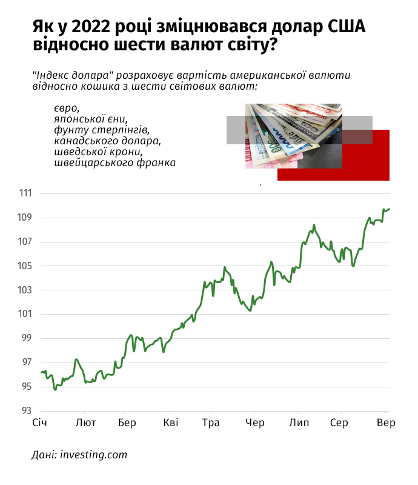

Що сталося
Такого не було останні 20 років. З травня американський долар зміцнюється відносно інших валют рекордними темпами.
5 вересня "індекс долара" – показник його вартості щодо кошика з шести світових валют (євро, японської єни, фунта стерлінгів, канадського долара, шведської крони та швейцарського франка) – перетнув позначку 110 пунктів.
Востаннє настільки ж міцною американська валюта була в травні 2002 року.
Якщо для економіки Сполучених Штатів міцніший долар матиме двоякі наслідки, то для решти світу це майже однозначно погана новина.
У США це може вгамувати рекордну інфляцію через зменшення вартості імпортних товарів. Проте такий вплив буде обмеженим, на рівні 0,2-0,3 в. п. , бо товари із споживчого кошика американців виробляються переважно в США. Утім, міцний долар вдарить по конкурентоздатності американських експортерів.
Втратять і американські транснаціональні корпорації (Apple, Meta, Alphabet), у яких значна частина виручки формується за кордоном. Зароблені у валютах інших країн прибутки будуть меншими в перерахунку на долари, а менші прибутки – більш ніж достатня причина для падіння вартості акцій цих компаній.
Для решти світу міцніший долар – це додатковий борговий тиск на держави та вищі темпи інфляції через подорожчання пального, газу та продовольства.
Чому подорожчав долар
Ситуація із зміцненням американської валюти стала наслідком рекордної інфляції в США та намагань ФРС повернути її під свій контроль.
Усе почалося два роки тому. У березні 2020 року, коли світ занурився в пандемію, ФРС запровадила надм’яку монетарну політику: ключову ставку опустили майже до нуля та почали активно "друкувати" долари.
Значні обсяги монетарної підтримки допомогли швидко зупинити обвал фондових ринків, а згодом навіть спричинили рекордне зростання вартості цінних паперів та інших інструментів, зокрема криптовалюти.
Невдовзі надлишкові долари почали впливати на сировинні ринки, а стрімке відновлення світово економіки після пандемії створило додатковий попит на нафту, газ, метали та продовольство. Усе це призвело до рекордної інфляції у Сполучених Штатах, інших розвинених країнах та країнах, що розвиваються.
Напад Росії на Україну лише посилив інфляційний тренд у світі, створивши дефіцит енергоносіїв та продовольства, що ще більше штовхало ціни вгору.
"Війна в Україні, криза на газовому ринку та сповільнення економічного зростання в провідних економіках лише додають бонусів долару як тихій гавані, тому він рекордно посилився у 2022 році", – вважає головний менеджер з макроекономічного аналізу "Райффайзен банку" Сергій Колодій.
Для боротьби з інфляцією ФРС вирішила згорнути програму кількісного пом’якшення ("друкування" доларів) та різко перейти до підвищення ключової ставки. З березня її розмір підвищувався вже чотири рази. Ключова ставка в США зросла з 0,25% до 2,5%. В інших країнах – схожий тренд.

Через зростання ключових ставок у світі долар та доларові активи почали приваблювати більше інвестицій з країн, що розвиваються, та з розвинених економік. Цей процес економісти називають "викачуванням ліквідності": кошти з висхідних ринків перетікають до розвинених економік, передусім до США.
На тлі розмов про потенційний початок нової світової рецесії інвестори схильні довіряти кошти США, бо їх економіка виглядає стійкішою, ніж інші.
"Китаю досі доводиться боротися з кризою сектору нерухомості і наслідками жорстких локдаунів, введених своїм урядом. ЄС потерпає від тяжкого протистояння з РФ і захмарних цін на енергоресурси", – відзначає голова департаменту корпоративного аналізу групи ICU Олександр Мартиненко.
Що буде з євро
За останні п'ять місяців ФРС підвищила ключову ставку на 2,25%, через що зросла дохідність казначейських облігацій США. Із січня ставка за десятирічними бондами піднялася з 1,5% до 3,2%.
Європейський регулятор діє менш рішуче. ЄЦБ підвищив ставку лише на 0,5%. Відповідно, активи в євро не такі привабливі, як у доларах.
Долар та євро – дві найбільші резервні валюти у світі, які між собою конкурують. Європейці не можуть підвищити ставку та повернути довіру інвесторів, бо це загальмує економіку і вона втратить свій головний стимул – дешеві кредити.
Європейська фінансова система не має запасу міцності для таких маневрів і не може собі дозволити різке підвищення ставок через енергетичну кризу.
Зниження постачань газу з РФ призвело до зростання цін на блакитне паливо у пʼять разів порівняно з 2021 роком. Заповнення газосховищ на зиму коштувало країнам ЄС 50 млрд євро. Це вдесятеро більше, ніж у попередні роки.
Високі ціни на газ, нафту та вугілля викачують гроші з рахунків компаній та гальмують їх розвиток. Низка енергоємних підприємств у ЄС уже закрилася.
Деяким країнам блоку у найближчі 12 місяців загрожує рецесія. У Єврокомісії попереджають, що спад відбудеться в Литві та Естонії. У зоні ризику також Німеччина, Італія та Австрія, які найбільш залежні від російського газу.
У цих умовах підвищення ставки ЄЦБ може принести більше шкоди, ніж користі. Викачування грошей може мати обмежений вплив на приборкання цін, адже їх штучно підігріває Росія, коли скорочує постачання газу. Значить, інвестори не зможуть захиститися від інфляції, навіть якщо ЄЦБ діятиме жорстко.
У Сполучених Штатах теж рекордна інфляція, але, на відміну від Європейського Союзу, країна бореться з нею підвищенням ставок і дає інвесторам кращу перспективу. Інфляцію в США легше контролювати монетарними стимулами, бо вона менш залежна від російського енергетичного шантажу.
Ще одна причина переходу з євро на долар – невизначеність в економіці ЄС. США – самодостатня економіка із сильним ринком праці та рішучим центральним банком. Країна здатна забезпечити себе продовольством, енергією та стабільно виплачувати борги, навіть якщо її спіткає рецесія.
Цим не може похизуватися Євросоюз. Економічні перспективи блоку незрозумілі через газову кризу та війну в Україні. У серпні уперше за 20 років євро став дешевшим, ніж долар. Зараз курс коливається на рівні 1 до 1.
Це поглиблює проблему інфляції для країн Євросоюзу, бо робить дорожчим імпорт товарів, зокрема сирої нафти та скрапленого газу, які мали б позбавити Європу залежності від російських енергоносіїв. Зате це частково підтримає європейських експортерів, які отримають більше євро за кожен долар.
Так, у звіті німецького виробника ліків Bayer за 2020 рік йдеться, що знецінення євро на 1% збільшує виручку компанії на 350 млн євро. Однак вигода для кожного експортера буде залежати від обсягів закупівель сировини в доларах.
Згодом ЄЦБ планує підвищити ключову ставку, щоб повернути довіру споживачів. Це може на певний час укріпити євро та врятувати його від ще більшого падіння. Проте загальний тренд буде залежати лише від того, як ЄС даватиме раду економічним викликам, спричиненим російською агресією.
Як це вплине на світову економіку
Світова економіка завжди важко переживає укріплення долара. Колишній міністр фінансів США Джон Конналі на саміті G10 у 1971 році на цю тему сказав: "Долар – це наша валюта, але це ваша проблема".
Проблема в тому, що більшість угод у міжнародній торгівлі укладаються в доларах, бо це найпопулярніша резервна валюта. Укріплення долара щодо інших валют означає, що імпортерам складніше виконувати контракти.
Компанії віддаватимуть більше внутрішньої валюти за однакову кількість доларів для купівлі товарів. Слабшим фірмам доведеться економити, а темпи міжнародної торгівлі загальмуються, штовхаючи світ до рецесії.
Найбільш відчутно це проявиться в питаннях продовольства та енергетики. Світові ціни на їжу через низку причин і так перебувають біля історичного піку, а газовий шантаж РФ та санкції проти агресора підігрівають вартість енергоносіїв.
Мало того, що ціни зросли в доларах, так ще й сам долар подорожчає для інших країн, утворивши болісний синергетичний ефект. Фактично бідні країни можуть стати ще біднішими, бо їх купівельна спроможність впаде.
Найважче буде країнам, які мають малі валютні резерви, великі борги у доларах або балансують на межі кризи через неефективну економічну політику. Потреба в імпорті та виплаті боргів викачуватиме з цих держав більше ресурсів.
Яскравий приклад – Шрі-Ланка. Країна постраждала від наслідків пандемії та опинилася в борговій ямі. У квітні через брак валюти влада оголосила дефолт.
Оскільки долар став надто привабливим через різке підвищення ставки ФРС, інвестори почали тікати з країн, що розвиваються. Аби конкурувати з доларом, їм доведеться теж підвищувати ставку та гальмувати економічне зростання.
Як це вплине на Україну
Україна – типова країна, що розвивається, з високою часткою зовнішнього державного боргу, яка дуже залежна від цін на сировину. Попри це, вплив зміцнення долара на вітчизняну економіку залишатиметься обмеженим.
Україна передусім страждає від російського нападу, тому не відчує одного з найбільш болісних наслідків міцного долара – відпливу ліквідності.
Усі зовнішні інвестори, які мали таке бажання, вивели кошти з країни ще напередодні війни або призупинили свої проєкти. Хто не встиг – "застряг" в українських активах через валютні обмеження Нацбанку. Тобто все, через що проходить решта висхідних країн, сталося з Україною в грудні-лютому.
Водночас війна відкрила для України додаткову можливість у залученні зовнішнього фінансування, якої нема в решти країн, що розвиваються.
"Нам, можна сказати, пощастило, бо партнери фінансують Україну попри відплив ліквідності і не за прогрес у реформах, а за геополітичну важливість перемоги у війні. Інакше наша економіка дуже постраждала б від зміцнення долара", – каже виконавчий директор "CASE-Україна" Дмитро Боярчук.
Ще один негативний наслідок міцного долара для країн, що розвиваються, – зростання боргового навантаження. Україні і тут пощастило: через війну уряд заморозив виплати за комерційними зовнішніми запозиченнями, зекономивши близько 5 млрд дол на найближчі два роки.
Водночас отримання Україною нових пільгових позик та грантів від партнерів дозволяє розраховуватися за рештою зовнішніх боргів.
У перший день великої війни Нацбанк зафіксував офіційний курс гривні до долара. До липня гривня пливла проти течії, бо зміцнювалася разом з доларом, тоді як валюти більшості країн, що розвиваються, девальвували.
Така тенденція могла б грати проти інтересів українських експортерів. Однак перед ними поставало чимало вагоміших проблем: зруйновані виробництва, закриті порти, зростання витрат на страхування вантажів. Усе це значно сильніше впливало на ціни українського експорту, ніж зміцнення гривні.
Наприкінці липня НБУ знизив курс гривні з 29,25 грн до 36,56 грн за дол. Такий крок зіграв на користь тим експортерам, які знаходити способи постачати свою продукцію на зовнішні ринки. Менш помітний наслідок зміцнення долара – вплив цього процесу на золотовалютні резерви Нацбанку.
Переважна більшість резервів НБУ, 81%, номінована в доларах. Завдяки щедрій міжнародній підтримці, зокрема зі США та Євросоюзу, загальний розмір резервів у серпні збільшився на 13,6% до 25,4 млрд дол.
Що буде далі
Прогнозування валютних курсів – справа невдячна, адже на зміну вартості долара відносно інших резервних валют впливає багато факторів. На користь зміцнення долара гратиме тверда позиція ФРС щодо боротьби з інфляцією.
"ФРС поступово припинила викуповувати активи і вже чотири рази підіймала ключову ставку. Вона точно зробить це і на вересневому засіданні. Скоріше за все – підвищить ставку ще на 75 базисних пунктів", – вважає Колодій.
Рішення ЄЦБ підвищити ставку вслід за США не особливо врятує євро, яке, швидше за все, залишатиметься слабким через енергетичну кризу.
"До кінця зими посилення євро чекати не варто. Можливо, євро зміцниться після проходження шоку від переорієнтації постачань енергоресурсів. Імовірно, це станеться не раніше, ніж за пів року", – прогнозує Боярчук.
Такий прогноз доволі умовний. Ситуація може змінитися, наприклад, через більш песимістичні показники американської економіки та загрозу рецесії в США. Тоді ФРС може зупинити підвищення ставок і навіть перейти до пом'якшення монетарної політики. Як наслідок, долар почне девальвувати.
Корективи в майбутнє долара та євро внесе і війна в Україні. Якщо вдасться зупинити агресора, це зміцнить європейську валюту. Не варто забувати і про зиму та енергетичну кризу. Якщо морози будуть сильними, то деякі європейські виробництва доведеться згорнути, що лише похитне позиції євро.
^ До початку ^